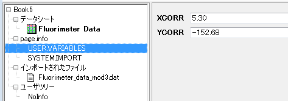
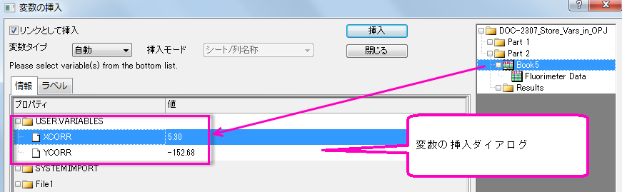

FAQ-423 ファイル名やヘッダから抽出した変数の情報を取り出すにはどうしたら良いでしょうか? また変数はどのように使ったら良いでしょうか?
Retrieve-and-Use-Variables
最終更新日:2015/08/07
Originプロジェクトでファイルのメタデータを抽出して使用する方法はたくさんあります。このFAQでは、インポートしたデータファイルから抽出された変数の取得と利用のためのユーザインターフェースについて紹介します。
- まず始めに、データファイルからメタデータを抽出しなければなりません。この作業に最適なツールは、インポートウィザードです。どのように操作するかは、データインポートに関するビデオチュートリアルのPart 3をご覧ください。
- 変数を定義し、データファイルをインポートすると、抽出した変数を取得して使用するための各種オプションを使用できます。
- ワークシートのセルに変数を挿入するには、セルを右クリックして変数の挿入をクリックします。(編集モードの場合は、CTRL+H)この操作で「変数の挿入」ダイアログボックスが開きます。このダイアログボックスについての詳細情報は、このトピックを確認してください。
- グラフページのテキストオブジェクトに変数を挿入するには、プロット作成・オブジェクト操作ツールバーのテキストツール
 を選択し、グラフウィンドウの空きスペースをクリックします。そして、右クリックで情報変数の挿入を選択します。(またはCTRL+H)このダイアログボックスについての詳細情報は、このトピックを確認してください。
を選択し、グラフウィンドウの空きスペースをクリックします。そして、右クリックで情報変数の挿入を選択します。(またはCTRL+H)このダイアログボックスについての詳細情報は、このトピックを確認してください。
- ワークブックのpage.info領域に保存されている変数は、例えば、そのワークブックの値の設定計算に使うことができます。これらの変数は、ワークブックオーガナイザもしくは変数の挿入ダイアログボックスのページレベルに表示されます。(データプロットワークシート)詳細な情報については、この投稿(OriginBlog)を参照してください。
- 
- 
キーワード：メタデータ, オーガナイザ, ブック, インポートウィザード, 変数の挿入, page.info,